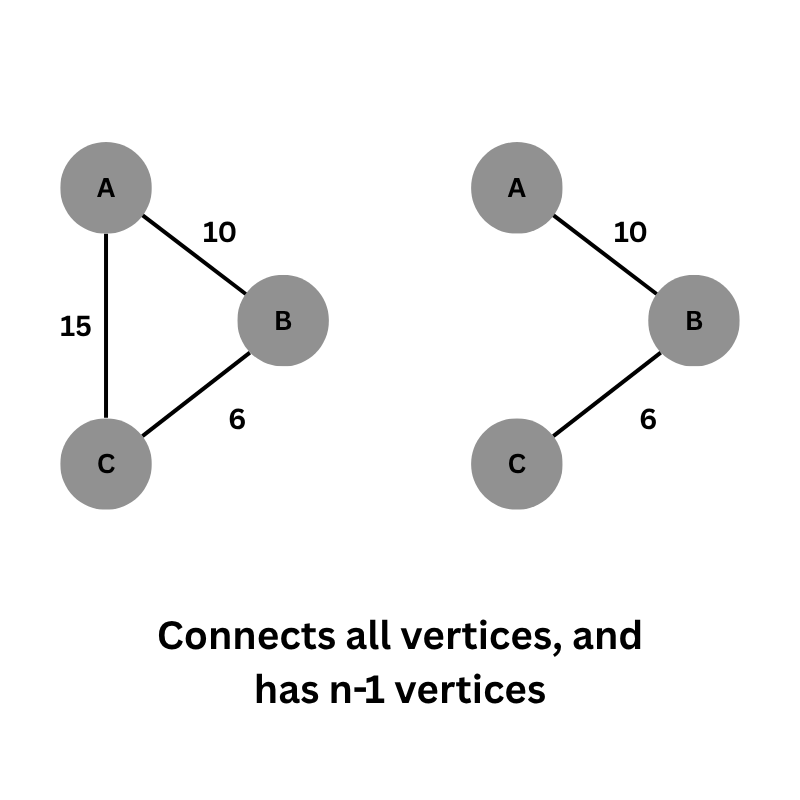

A spanning tree is a tree that contains N vertices and N-1 edges, where every vertex is connected to every other vertex. A minimum spanning tree is a spanning tree with the minimum sum of edge weights.
In the example above, we remove the edge between C and A, as its removal does not disconnect the graph—meaning all components remain connected. To find a Minimum Spanning Tree (MST), we typically use Kruskal's Algorithm or Prim's Algorithm.
Kruskal's MST algorithm is based on DSU, therefore DSU is a prerequisite for this learning this algorithm (graph - 4). The algorithm consists of three main steps:
Prim's Algorithm is a greedy algorithm that finds the Minimum Spanning Tree (MST) of a connected, weighted graph. It starts from an arbitrary node and grows the MST by always choosing the edge with the smallest weight that connects a visited node to an unvisited node.
priority_queue (min-heap) to store edges in the form:
(weight, to_node, from_node).
(0, 0, -1) into the priority queue.
0 is the weight (no cost to start)0 is the starting node-1 indicates no parent (root of the MST)In Krushal's algorithm instead of sorting edges in ascending order, we sort in descinding order instead. In prim's algorithm instead of maintaining priority queue of ascending order, we maintain priority queue of descending order instead.
For a disconnected graph (graph with multiple isolated parts), you can't have a single spanning tree. So, you create a spanning tree for each connected component, and together, these trees form a forest (a collection of trees).